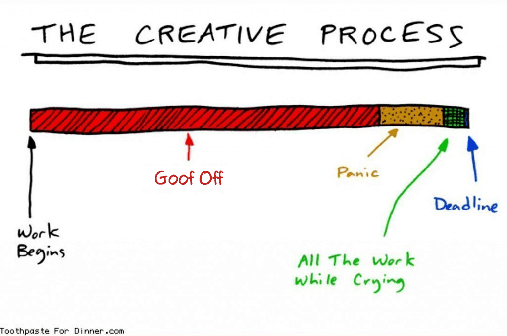
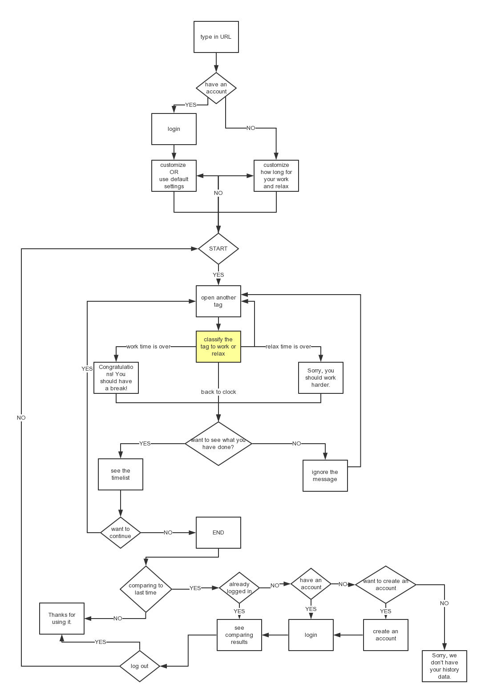
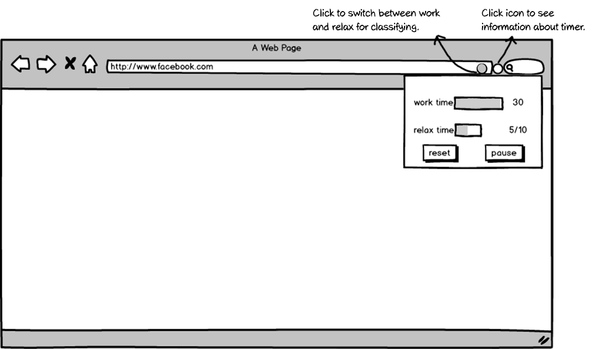

You might be familiar with this scenario, you are browsing Facebook, have your new project plan in mind which is due Monday, and you still don’t feel ready to start.
Telling procrastinators “Be practical” or “Just do it” is like telling junk-food lovers “Don’t eat fried chips”. Based on research, I have realized that the habit is more likely a psychological problem rather than a design problem I can solve. However, taking a stop back I can help people to avoid the problems that result from procrastination, namely fear and pressure. Which could break the vicious cycle that results from procrastination.
After considering the medium which I could exploit best, the target users were narrowed down to those who work on laptops and had a general idea of what to do.
Psychologist Shawn Achor and his Ted talk — The happy secret to better work inspired me with another perspective of why people procrastinate. If a person sets a plan based on their best behavior and takes it as an unmoveable goal, no wonder they fear to start it.
People love games. Obviously, breaking work into specific steps and making it a game is a good idea, but the game desing part would consume a effort. So the solution should be a simple game system.
I chose to create a chrome extension to encourage users to get more time work. Users don’t need to be productive, they just need to do things that are related to their work, including easing their nerves about upcoming work. Users need to earn time to relax by devoting other time to work. The ratio or work time to relaxation time are set by the users themselves.
I did an early state design following the chrome extension development guide. The extension let users classify their tabs as work or relaxation by clicking an icon, which switched the tab’s color.
I did a user test with a paper prototype to figure out how frequently and under what circumstances people are comfortable to interact with the time. Based on the results, it made the most sense that the color of the icon on a new table would be the same as on the prior tab until a user changed it.
Chrome only allows one object per extension to interact with, which gave my design a challenge. At first I designed two parts for two functions, one was for classifying tables, and the other was for information about the timer.
Since the smoothness of an application is a kind of user experience, the design shouldn’t be a burden, it should be clean and light weight. I adjusted the design wile doing research on similar functions found on Stack Overflow.
I created a team for the project, with one developer helping me build the extension and three others as testers. The source code for this project can be found on GitHub. Note, that making an individual project a team project is an efficient way itself to fight procrastination!